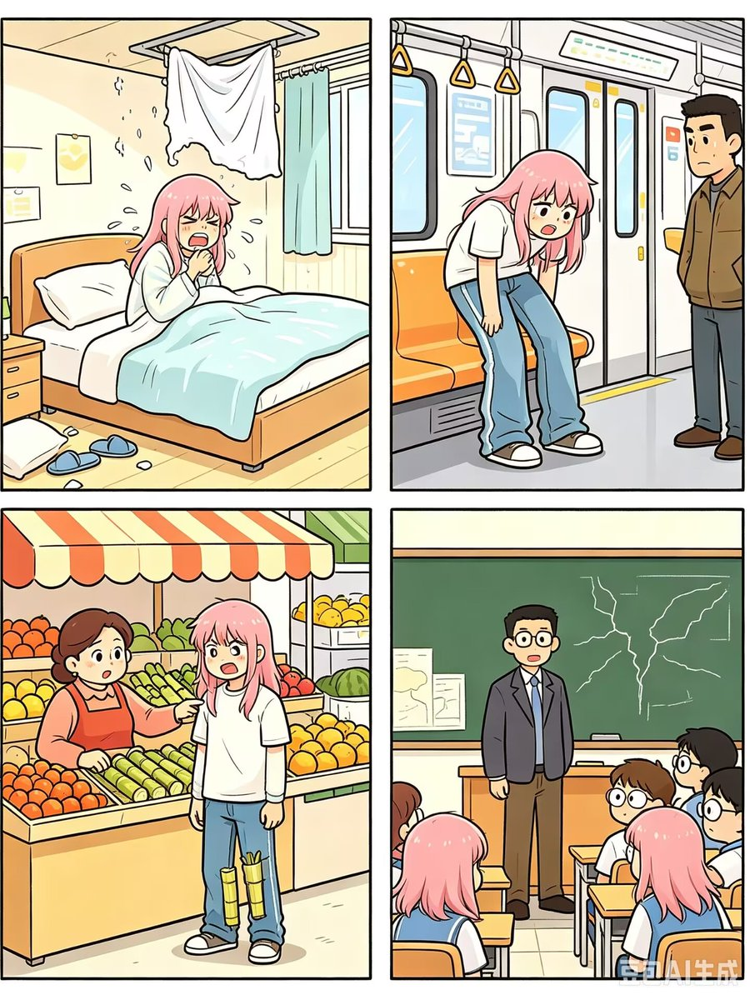

沐安ねこ
@show5560
我早上刚起床就被冻感冒了，原来是没盖被子。那被子呢？我抬头一看，原来是在天花板上。
我弯着腰进了地铁，旁边的大哥说，你为什么把腿放在座位上？我笑了说，那不是腿。
中午去水果店，到了结账的时候，老板娘非说我偷了她的甘蔗。我说没有啊，她指了指我的裤子，我沉默了。
终于在行动不便的情况下来到了学校。晚自习时，地理老师讲了东非大裂谷的由来，是因为我摔倒造成的。同学们惊讶地看着我，我说，虽然你们可能不相信，但这就是我的日常罢了😋
（别问图片怎么回事，问就是ai不好用，将就看吧qwq）
